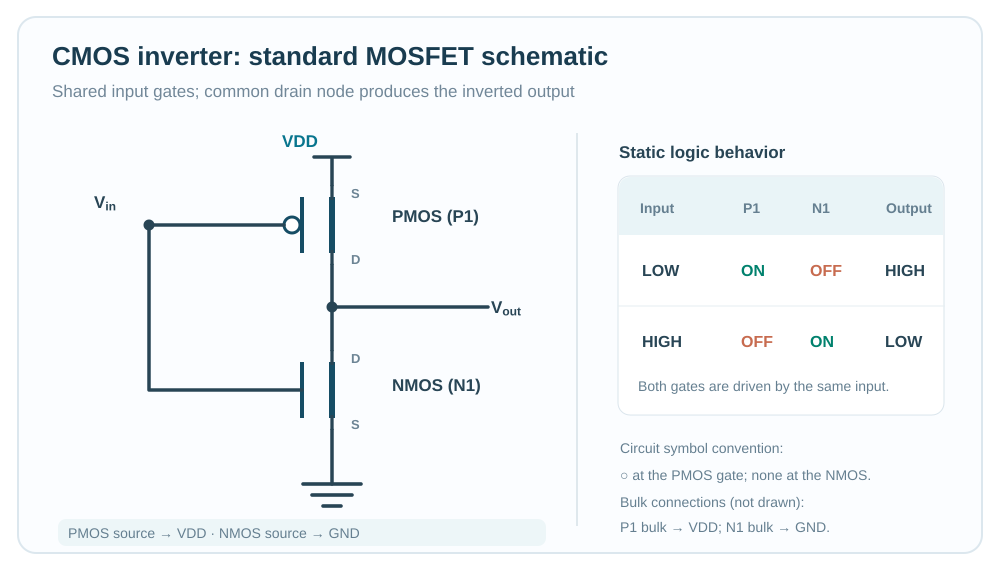

VLSI Design
From transistor physics to the CMOS circuits that make modern digital systems possible. Follow the book's structured explanations, worked equations and original diagrams, then adjust real parameters in interactive circuit experiments.
Book contents
These are original lecture chapters aligned with Neamen, Baker, and Weste & Harris. The reference books inform the explanations; their copyrighted pages are not reproduced.

Interactive CMOS Inverter — run it here
Now the laboratory is embedded directly on the homepage as well as in Chapter 1. Try Weak PMOS, Balanced, and Strong PMOS; watch the switching threshold move, then compare the separate input and output voltage plots. No frequency or external capacitance sliders.
Upcoming chapters
02 · CMOS Logic Gates
NAND, NOR, equivalent pull-up and pull-down networks, series/parallel sizing. Planned.
03 · Delay and Timing
Equivalent resistance, internal and external capacitance, timing estimation and FO4. Planned.
References
The CMOS inverter material draws on D. A. Neamen, Microelectronics: Circuit Analysis and Design, §16.3; R. J. Baker, CMOS: Circuit Design, Layout, and Simulation, Ch. 11; and N. H. E. Weste and D. M. Harris, CMOS VLSI Design, §2.5. The chapter contains full bibliographic details.